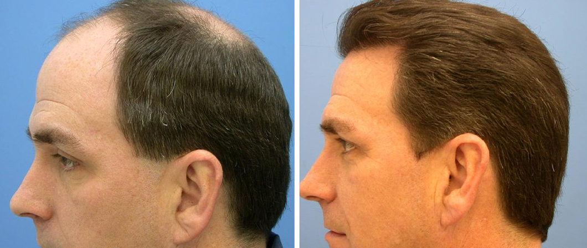

Hair Transplant Publications
Hair transplant is a cosmetic procedure used in recent years with painless and advanced techniques, it is done through the use of other donor areas of the body.

Hair Transplant in Turkey
Every year thousands of people travel to Turkey to have hair transplants in particular or for the purpose of health tourism in general, as Turkey have become a major attraction for people who are seeking health services in general, all this can be basically accounted for by the competitive prices you can find in Turkey compared to other countries in Europe and the US, and also the qualified medical professionals and the developed health infrastructure in the Republic of Turkey.
Table of Content
What is hair transplantation?
What is hair transplantation procedure? We need to explain the nature of the procedure before we delve into the details of what hair transplants in Turkey are like.
Hair transplantation is a surgical procedure by which we restore hair in areas with total or partial hair loss.
There are several techniques developed to restore hair, but hair transplant remains the most used and trusted and the one that gives the best outcome.
Hair transplant procedure involves harvesting hair follicles from areas rich in hair in the scalp, to implant it to other areas suffering from hair loss.
Hair loss reasons
The prevailing theory has always blamed poor blood circulation in the scalp for hair loss, or the lack of certain vitamins or dandruff, or even the continuous wearing of hats and headwears.
But all these theories have been proven wrong, and you can realize this by looking at any man who has exceeded fifty and does not suffer from baldness or hair loss, and you can also predict that he will not suffer baldness anymore!
Hair loss mainly can be explained by a number of causes, including changes in hormones, and the genetic predisposition of hair follicles to be affected by these hormones, which is evidenced by the presence of several family members who suffer from this problem.
As a general rule, the more hair loss begins at an early age, the greater the chance that the situation will be worse with age.
Is Hair Transplant good in turkey ?
Read more : Hair Transplant for Men in Turkey

Hair transplantation will improve your looks, style, and self-confidence, but before you decide to get a hair transplant you should discuss your decision with your doctor, as they will tell you what to expect in terms of appearance and results.
You need to understand well that hair transplants use the hair that you have, and the goal of the procedure is to make optimal use of existing hair to cover areas suffering from baldness to give the ideal aesthetic result.
But keep in mind, this procedure has its limitations and criteria. For example, a person with very little hair on the back and the sides of the scalp is often not recommended to have the procedure done.
Read More : Beard and Moustache Transplant in Turkey
Hair transplant without shaving for females
Experts estimate that one out of five women suffers from some kind of hair loss due to old age besides some problems such as hormonal changes after the menopause.
Hair loss in women is often a partial loss of hair and not total as in men. To address this problem, some women may have to use hair extensions or some topical treatments.
However, all what these treatments do is to prevent more hair loss, but it does not reverse what has already been lost, and some women may find a cure for this problem through hair transplantation.
Read More : Hair Transplant Without Shaving In Turkey For Women And Men
Before hair transplant
Your physician will ask you about history of hair loss in family members, and if you have undergone a similar procedure before, and about your life style and your expectations out of the procedure.
Some health problems may negatively affect the decision to perform the procedure include uncontrollable hypertension, blood clotting disturbances and the tendency of the skin to form large, prominent scars.
Our medical team will guide you in what you need to do if you have similar problems.
Side effects for hair transplant

Hair transplant procedure step by step
Before getting your hair transplant in Turkey, your doctor will give you precise instructions as to how to prepare for the procedure, instructions involving eating, drinking or smoking, and taking your medications, if you have any.
Following these instructions will contribute to increasing the success rate of the procedure, and if you are a smoker you will have to stop smoking at least a week or two before the operation, smoking reduces blood flow to the tissues and affects the process of healing.
Hair transplantation is most often performed in your surgeon's clinic, as it is considered an outpatient procedure and does not require hospitalization.
Hair Transplant Procedure Timeline
The patient's hair is completely shaven, however, it is sometimes possible to do the procedure without shaving, then the scalp is washed with a sterile solution, and the scalp is injected with a local anesthetic.
At this stage, we use the micromotor device to extract the follicles from the donor area, without damaging the structure of the hair, Which increases the number of extracted healthy follicles that can be implanted successfully.
After extracting the follicles, they are kept in a special solution, which is the same solution used to preserve organs during transplant procedures, to keep grafts healthy.
In DHI technique using Choi pens, fine slits are opened and the grafts implanted in the same step, while in the SAPPHIRE FUE technique, a sharp-headed tool made from sapphire stone is used to open the fine slits, and this tool has the advantage of opening the fine slits so smoothly causing no damage or scars, then the grafts are implanted into those fine slits.
In this step, the extracted follicles are Implanted into the opened slits, and given that the last couple steps are the most important ones, they require high skills, as the surgeon takes into consideration, the density, esthetic results, and natural hair growth.
Read More : Donor area recovery after hair transplant
Hair transplant progress
Hair transplantation involves harvesting hair follicles from the donor area, and transferring them to the recipient areas that suffer from thin hair or baldness. These follicular units may vary in size and shape depending on the technique used.
In general, it may take more than one session to reach satisfactory cosmetic result, and the sessions may be far apart, depending upon the doctor's judgement.
The number of follicular units implanted in one session may reach 700 unit or more depending on the technique to be used.
Just before the operation, the donor area is prepared by cutting the hair shortly to facilitate the process of reaching and extracting hair follicles, sometimes the hair follicular unit is harvested using a pointed tool to extract a very small follicular unit out of the scalp, each of which holds a small number of hair follicles to be implanted in the same session into recipient areas.
Your surgeon carefully extracts and implants hair follicles without damaging the donor areas, taking into consideration the direction of hair so it can grow in natural and consistent angles.

Is hair transplant painful ?
After hair transplant surgery
You will be able to remove the dressings after a day or two, and you can wash your head two days after the procedure.
In the event of swelling, cyanosis or drainage from the scalp, you should consult your doctor immediately.
The doctor will see you several times in the first month after the procedure to ensure that small cuts in the donor and the recipient areas are healing well.
After hair transplant shock loss
If you see some transplanted hair falling out during a period of six weeks after the operation, do not be alarmed and make sure that this is a natural and temporary thing, since after this hair falls, new hair will grow after a period of weeks five weeks, the normal growth rate is usually about one centimeter per month. before and after hair transplantation Technique Sapphire Grafts Number 6000 Grafts After 18 Months Technique Sapphire perkut... Grafts Number 5500 Grafts After 12 Months Technique Sapphire perkut... Grafts Number 5500 Grafts After 18 Months Technique Sapphire Grafts Number 3000 Grafts After 12 Months Technique Sapphire Grafts Number 4500 Grafts After 18 Months
Read More :Shock hair loss after hair transplant
 before
before
 after
after
 before
before
 after
after
 before
before
 after
after
 before
before
 after
after
 before
before
 after
after
Hair transplant turkey results success rate
If your doctor decides that hair transplantation is a suitable option for you, then you can rest assured that Ilajak Medical will be with you through all steps of the process, starting from airport pick up until you go home with the best results.
Read More : Turkey hair transplant package cost
Your hair transplant will be done by our specialized plastic surgery team using the most modern technological methods.
Hair transplant Questions
Yes، within 2 to 3 weeks after surgery، the transplanted hair will fall out، but you should start to notice new growth within a few months. Most people will see 60% of new hair growth after 6 to 9 months.
Yes absolutely، by transferring hair from any hair resistant zone in your body mainly back of your head to bald or thinning follicles zone.
Hair transplant surgery is normally safe when performed by a qualified، experienced certified surgeon. Still، individuals vary greatly in their physical reactions and healing abilities، and the outcome is never completely predictable. As in any surgical procedure، an infection may occur.
Celebrities prefer good reputation centers and experienced doctors، we in Ilajak Medical combine good reputation، highly experienced doctors، and reasonable prices.
Yes، the reason behind that it is transplanted from the hair loss resistant area.
It's normal for the transplanted hair to fall out two to three weeks after the procedure. This makes way for new natural hair growth.
Scars occur in the donor area of your scalp- the area where hair follicles have been taken out.
Good Hair Transplant can simulate natural hair look and direction.
Hair Transplant is a safe، and permanent hair restoration procedure without pain and minimal side effects.
The best Hair Transplant depends on individual needs and circumstances along with the physician recommendation.

Latest Articles, Health News, Clinical Research, and more.
Keratoconus and cataracts , symptoms and types
What is Keratoconus, How it looks and what are the symptoms? Also, find out Keratoconus’s types and stages , Learn more with ILAJAK Medical.
Best Spa Resorts with Medical Services clinics in Turkey.
In this article, we will learn about the importance of health resorts and the treatment services they offer and the top and famous health & medical resorts in Turkey
Zirconia teeth type and costs in Turkey 2021
Zirconia dental crowns and bridges are used to treat and protect the affected teeth due to decay or fractures, etc, In this article we will learn about the advantages and drawbacks of Zirconia Crowns and bridges
Benefits of porcelain teeth and costs in Turkey 2021
Porcelain crowns and veneers are used to strengthen and protect damaged teeth due to decay or cracks or any other reason. In this article, we will discover dental porcelain and its advantages and risks.